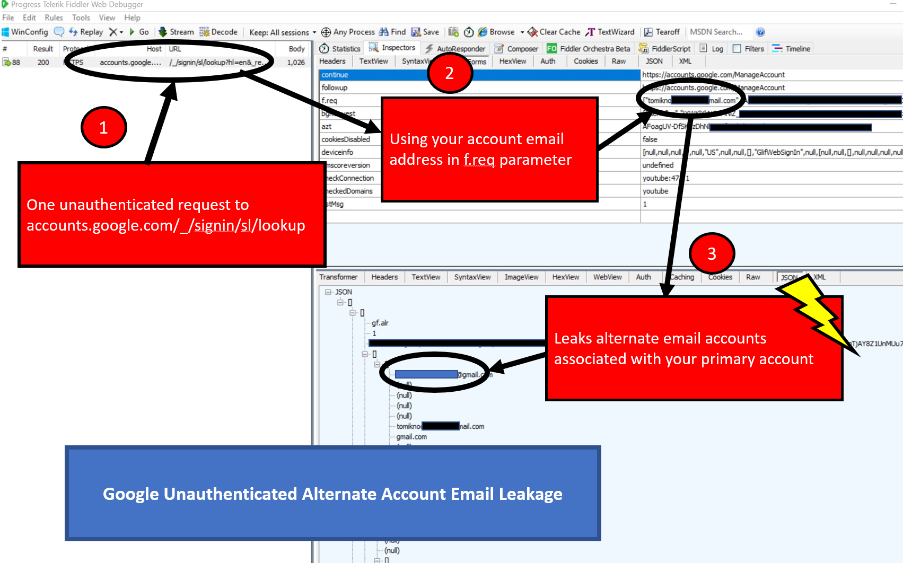

The Google Login Flow leaks additional email account information to unauthenticated users. I discovered this in the Google Account Login flow while building KoiPhish.
All that is needed to trigger the leakage is to call the unauthenticated signin endpoint at https://accounts.google.com/_signin/sl/lookup and in the f.req parameter provide an email address.

An adversary could do this at scale to retrieve additional accounts for phishing or possibly learn about recovery account - which in my case was the alternate account. lol. So, I'd assume others might have done the same.
Mitigations: Remove all alternate account associations. Since the altnernate account might be your recovery address - it was setup for a couple of friends I shared this with, so it's likely a normal case.
Make sure that any alternate account is not your password recovery or 2FA to minimize attack surface.
Written February, 8th 2019. Posted June 2019.